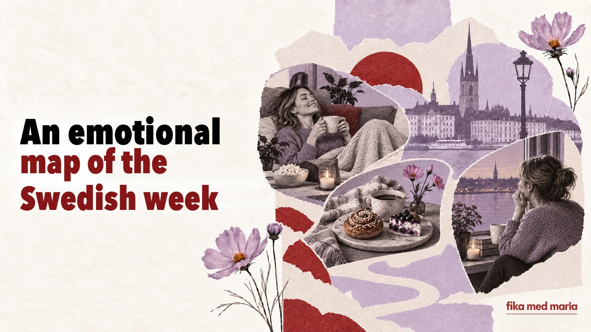

From fredagsmys to söndagsångest: an emotional map of the Swedish week

The calendar shows the days. Language shows what we expect from them.
Swedish has words and habits that create an emotional script for the week: a little Wednesday, a cosy Friday, Saturday sweets and Sunday anxiety. Together they tell you more about everyday life in Sweden than a list of public holidays does.
Måndag: starting over
Monday has the familiar reputation of being a hard day.
Det känns verkligen som måndag.
Today really does feel like Monday.
If someone asks Hur är läget?, it’s perfectly natural to answer:
Jo då, lite trött bara. Det är ju måndag.
Oh, I’m fine, just a bit tired. It’s Monday, after all.
The particle ju creates a shared understanding here: we both know that Monday explains everything.
Lillördag: a little Saturday in the middle of the week
Wednesday is sometimes called lillördag – little Saturday. Historical explanations vary, but in modern usage the word often means a chance to do something nicer and more festive in the middle of the week: to meet up, go somewhere or treat yourself to a glass of wine.
Ska vi gå ut? Det är ju lillördag.
It’s not an obligatory nationwide ritual. Rather, it’s a culturally recognisable name you can use to jokingly excuse a Wednesday that behaves like a Saturday.
Torsdag: almost Friday
Thursday is often spent looking forward to the weekend. In traditional cooking it’s associated with pea soup and pancakes – ärtsoppa och pannkakor.
In conversation today, a different feeling matters more:
Snart är det helg.
It’ll soon be the weekend.
It’s a simple phrase, but it shows how the week is already turning towards rest.
Fredagsmys: cosiness as a plan
Fredagsmys is made up of fredag and mys. It isn’t just a “cosy Friday” but a recognisable way of ending the week: home, simple food, snacks, a film, family or loved ones.
Vi ska bara vara hemma och ha fredagsmys.
We’ll just stay at home and have a cosy Friday evening.
The word bara doesn’t downplay the plan here. On the contrary: after a working week, “just being at home” can be exactly what you want most.
Lördagsgodis: sweets on a schedule
Lördagsgodis – Saturday sweets, associated above all with children’s habit of eating sweets on Saturdays specifically.
In a shop you’ll find lösgodis – sweets sold by weight that everyone picks and mixes for themselves. For a child, choosing can be a ritual in itself; for an adult, it can be nostalgia.
Useful phrases:
Får jag välja lördagsgodis?
Can I choose some Saturday sweets?
Vilken är din favorit?
What’s your favourite?
Söndagsångest: when the weekend isn’t over yet but is already coming to an end
Söndagsångest – Sunday anxiety before a new week of work or study.
It can be genuinely intense worry, or a half-joking reluctance to say goodbye to the weekend.
Jag får alltid lite söndagsångest på kvällen.
I always get a bit of Sunday anxiety in the evening.
Notice lite: it softens the statement and makes it sound conversational.
Why learn words like these
They aren’t among the “hundred words you can’t survive without”. But it’s precisely these words that help you move from functional language to social language.
When you know fredagsmys, you don’t just understand a word. You understand why a colleague cheerfully says they’re not planning anything for the weekend. When you know söndagsångest, you can join in a light conversation on Monday.
Finish the sentences:
- På fredagar brukar jag…
- Mitt perfekta fredagsmys är…
- Jag får söndagsångest när…
- På lördagar vill jag helst…
In the Fika med Maria materials, grammar and vocabulary live inside topics you’ll want to discuss: habits, relationships, work, culture and everyday life. Materials and courses.
Do all Swedes have fredagsmys?
No. It’s a recognisable cultural habit, not a rule that every family has to follow.
Is söndagsångest a medical term?
In everyday language it’s an informal name for an anxious or unpleasant feeling before a new week.